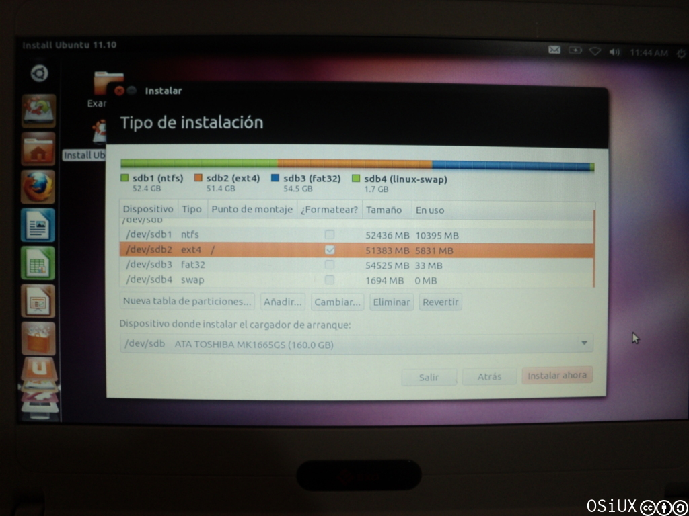

Instalando Ubuntu 11.10 en Exomate de Conectar Igualdad
index | CC-BY-SA | OSiUX | blog | docs
El sábado 22 en la Ciudad de Curuzú Cuatiá gracias a Liliana Arbelo, tuve la oportunidad de jugar un poco con varias notebooks del Programa Conectar Igualdad 1
Un día antes, estuvimos en la Ciudad de Monte Caseros, dando charlas sobre Software Libre en el cierre de la Primera Olimpíada Interescolar Informática de Nivel Secundario y la Primera Olimpíada de Informática Escolar en el Nivel Programación en la Escuela Técnica Pedro Ferré, y a los asistentes les gustó mucho la última versión de Ubuntu 2 la cual grabamos en muchos pendrives.
Hay una nota sobre el evento en:
Por esto decidimos probar de instalarla en las notebooks, los modelos usados tenían rxart, y la idea era usar otra distro, el desafío era que funcione con el agente que valida las claves de bloqueo contra el servidor de la escuela.

Empaquetando Theft Deterrent Agent
Instalando Ubuntu 11.10


Arrancamos desde un pendrive y especificamos manualmente las
particiones, de esa manera elegimos la partición /dev/sdb2 como raíz
/ del sistema y mantuvimos /dev/sdb4/ como swap. Una vez
finalizada la instalación nos quedó un nuevo GRUB invocando por
defecto a Ubuntu 11.10 y el resto lo mantuvo igual.
Instalando Theft Deterrent Agent
En teoría bastaba con copiar los 2 paquetes .deb y hacer:
dpkg -i libtdagent_1.0netbook0natick3_i386 dpkg -i tdagent_2.0.0.100netbook0natick7_i386
Sin embargo al querer iniciar /usr/bin/theftdeterrent.sh tiraba un
error, faltaba una librería de SSL, asi que la descargué en otra compu
y copié con un pendrive para finalmente instalarla:
dpkg -o libssl0.9.8
Luego corrí el agente y salió andando, al menos mostraba un mensaje de que era necesario conectarse al servidor de la escuela para que no se bloquee la compu, lamentablemente no teníamos a mano el servidor de la escuela, pero en principio parece funcionar bien.
Entusiasmados decidimos actualizar ubuntu, para esto usamos un modem huawei de claro para conectarnos, ubuntu lo detectó de una sola vez y salió andando, instalamos varias aplicaciones y luego del reboot sorpresivamente dejó de reconocer el modém huawei, por suerte contaba con un tutorial sobre cómo hacer funcionar un modem3g de Claro en Debian, el cual permitió conectarnos nuevamente a internet y terminar la actualización del sistema: